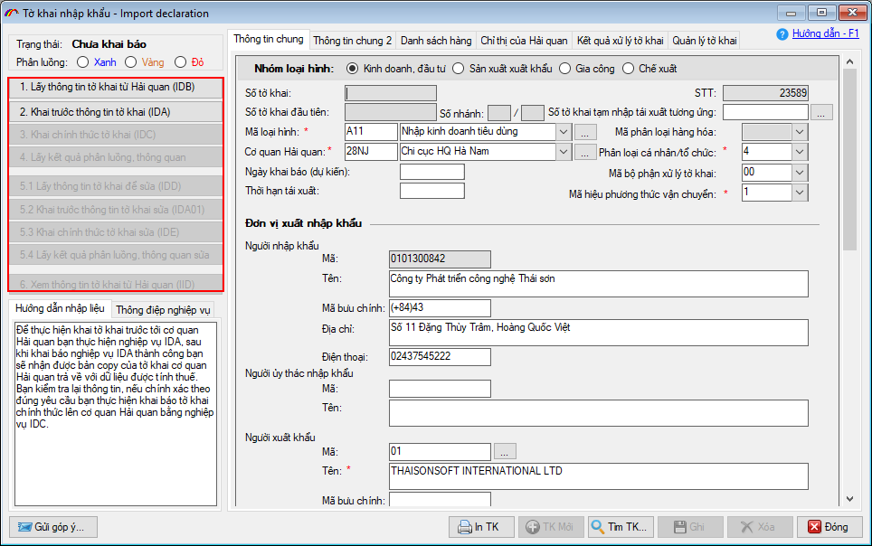
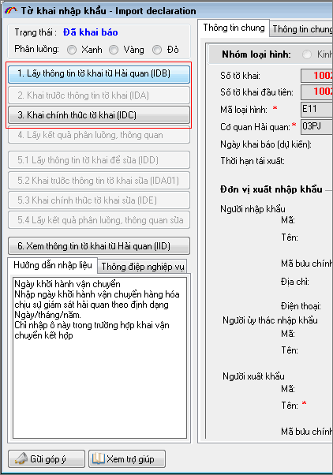
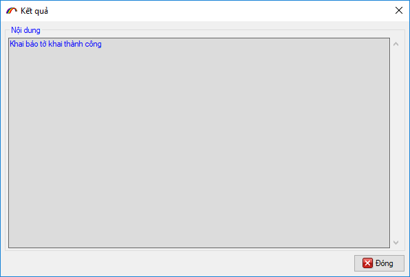
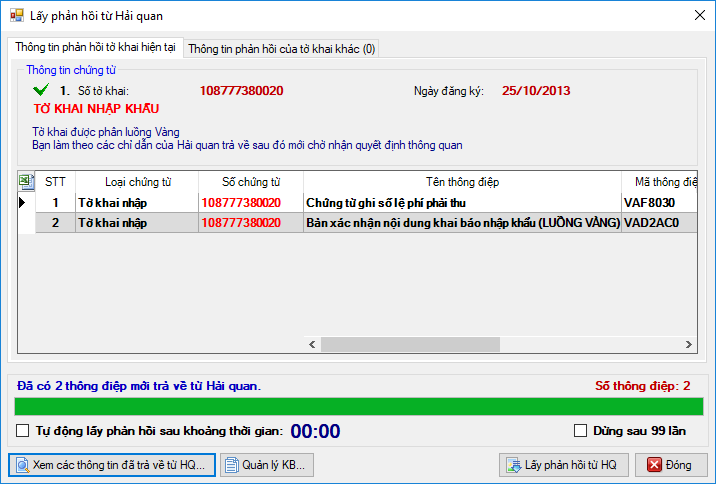
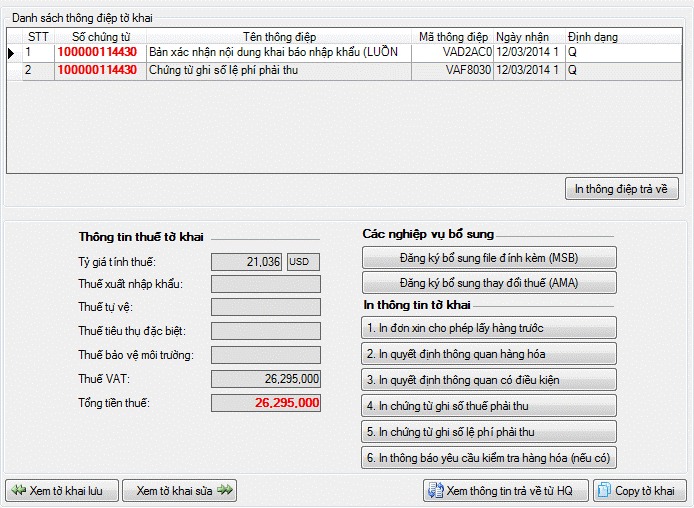

QUY TRÌNH KHAI BÁO TỜ KHAI NHẬP
Sau khi nhập dữ liệu cho tờ khai, bạn tiến hành khai báo tờ khai lên hệ thống các bước nghiệp vụ sẽ ẩn / hiện theo từng giai đoạn của tờ khai giúp bạn hình dung được bước tiếp theo cần thực hiện. Để khai báo bạn sử dụng các mã nghiệp vụ như hình sau :
- Khai trước thông tin tờ khai IDA và Chứng từ đính kèm
- Khai chính thức tờ khai IDC
- Lấy kết quả phân luồng, thông quan
- In tờ khai và các chứng từ khác
- Sửa tờ khai sau khi đã khai chính thức
- Sau khi kiểm tra các thông tin trả về đã chính xác bạn chuyển sang Khai báo chính thức tờ khai IDC
- Hoặc nếu có sai sót cần sửa lại bạn thực hiện Lấy thông tin tờ khai từ Hải quan IDB về để sửa.

Bạn nhấn chọn "Yes" để chương trình tách tờ khai thành các tờ khai nhánh cho đúng chuẩn của VNACCS (một tờ khai chỉ được tối đa 50 dòng hàng, trường hợp nhiều hơn 50 dòng hàng thì tách thành nhiều tờ khai nhánh khác nhau), khi tách thành công thành bao nhiêu nhánh chương trình sẽ thông báo như sau:

Khi đó bạn vào menu "Tờ khai xuất nhập khẩu" chọn "Danh sách tờ khai nhập khẩu" các tờ khai nhánh có liên quan sẽ được thể hiện như sau:


Người khai tiến hành khai lần lượt các tờ khai với chú ý phải khai tờ khai có nhánh đầu tiên trước(số nhánh là 1) .

Chương trình sẽ yêu cầu bạn xác nhận chữ ký số khi khai báo, bạn chọn chữ ký số từ danh sách:

Và nhập vào mã PIN của Chữ ký số:

Thành công hệ thống sẽ trả về số tờ khai và bản copy tờ khai bao gồm các thông tin về thuế được hệ thống tự động tính, các thông tin còn thuế khác như "Tên, địa chỉ doanh nghiệp khai báo"




Màn hình chức năng bổ sung chứng từ như sau:

Doanh nghiệp tiến hành nhập thông tin chứng từ: Số chứng từ, ngày chứng từ, tên – nơi chứng từ và chọn loại chứng từ trong danh sách:

Đối với file đính kèm, bạn nhấn vào nút "File đính kèm" để tìm và chọn:

Sau khi nhập và ghi thông tin chứng từ, bạn tiến hành khai báo chứng từ bằng cách nhấn nút "Khai báo", nếu file đính kèm chưa được ký số trước đó phần mềm sẽ hiện cửa sổ thông báo để bạn tiến hành ký số như sau:

Nhấn "Ký chứng từ" và chọn chữ ký số từ danh sách (lưu ý chữ ký số phải được cắm vào máy tính):

Nhập mã PIN cho thiết bị chữ ký số:

Sau khi ký số và gửi thành công lên cơ quan Hải quan bạn sẽ nhận được thông báo như sau:

Sau đó nhấn nút "XNKB" để lấy thông tin phản hồi đến khi nhận được số tiếp nhận trả về từ cơ quan Hải quan.

Lúc này bạn có thể yên tâm khai báo tiếp các bước còn lại như hướng dẫn phía dưới đây để hoàn tất thủ tục cho một tờ khai nhập khẩu.

Khai báo thành công tờ khai này sẽ được đưa vào tiến hành các thủ tục thông quan hàng hóa.

Đối với tờ khai là luồng Vàng: Trường hợp tờ khai được phân luồng 2 (vàng), người khai xuất trình, nộp chứng từ giấy thuộc hồ sơ hải quan để kiểm tra, nếu kết quả kiểm tra phù hợp, công chức hải quan cập nhật kết quả kiểm tra vào Hệ thống. Hệ thống tự động kiểm tra việc hoàn thành nghĩa vụ về thuế và quyết định thông quan, Công chức được giao nhiệm vụ thuộc Chi cục Hải quan nơi đăng ký tờ khai thực hiện việc in, đóng dấu xác nhận, ký, đóng dấu công chức vào góc trên cùng bên phải của trang đầu tiên Tờ khai hàng hóa nhập khẩu (trừ thông tin chi tiết từng dòng hàng) đã được phê duyệt thông quan. giao cho người khai hải quan để làm tiếp các thủ tục (nếu có);
Đối với tờ khai là luồng Đỏ: Trường hợp tờ khai được phân luồng 3 (Đỏ), người khai xuất trình, nộp chứng từ giấy thuộc hồ sơ hải quan và hàng hóa để kiểm tra, nếu kết quả kiểm tra phù hợp, công chức hải quan cập nhật kết quả kiểm tra vào Hệ thống. Hệ thống tự động kiểm tra việc hoàn thành nghĩa vụ về thuế và quyết định thông quan, Công chức được giao nhiệm vụ thuộc Chi cục Hải quan nơi đăng ký tờ khai thực hiện việc in, đóng dấu xác nhận, ký, đóng dấu công chức vào góc trên cùng bên phải của trang đầu tiên Tờ khai hàng hóa nhập khẩu (trừ thông tin chi tiết từng dòng hàng) đã được phê duyệt thông quan. giao cho người khai hải quan để làm tiếp các thủ tục (nếu có).
Sau khi có phản hồi chấp nhận thông quan tờ khai, bạn có thể In tờ khai và các chứng từ khác để tham khảo
Nút "In TK" trên tờ khai sẽ in ra thông điệp mới nhất từ Hải quan trả về, trừ các thông điệp về phí và lệ phí, thông báo thuế.


Tờ khai là luồng Xanh hoặc đã được xử lý của cơ quan Hải quan thì không thể dùng các nghiệp vụ này để sửa mà người khai phải sử dụng:
+ Nghiệp vụ AMA: để khai sửa đổi, bổ sung về thuế và các thông tin cho dòng hàng, để sử dụng nghiệp vụ này, bạn vào tab "Kết quả xử lý tờ khai" chọn nghiệp vụ "Đăng ký bổ sung thay đổi thuế AMA" hoặc vào menu "Tờ khai hải quan" và chọn mục "Khai bổ sung":

+ Sử dụng công văn đề nghị: Nếu muốn sửa đổi bổ sung thông tin chung cho tờ khai thì người khai cần gửi công văn để cơ quan Hải quan xem xét và tiến hành sửa đổi.